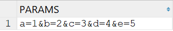
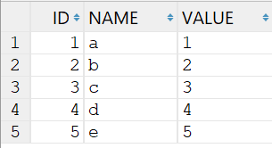
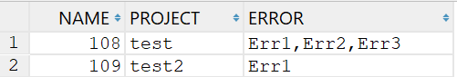

# 效果


# SQL
with t1 as (select 'a=1&b=2&c=3&d=4&e=5' as params from dual) | |
select id, | |
SUBSTR(data, 1, INSTR(data, '=') - 1) AS name, | |
SUBSTR(data, INSTR(data, '=') + 1) AS value | |
from (select LEVEL AS id, REGEXP_SUBSTR(params, '[^&]+', 1, LEVEL) AS data | |
from (select params from t1) | |
CONNECT BY REGEXP_SUBSTR(params, '[^&]+', 1, LEVEL) IS NOT NULL); |
# 效果


# SQL
with temp as (select 108 Name, 'test' Project, 'Err1,Err2,Err3' Error from dual | |
union all | |
select 109, 'test2', 'Err1' from dual) | |
select t.name, t.project, | |
regexp_substr(t.error, '[^,]+', 1, levels.column_value) as error | |
from temp t, | |
table (cast(multiset(select level from dual connect by level <= length(regexp_replace(t.error, '[^,]+')) + 1) as | |
sys.OdciNumberList)) levels | |
order by name |
# 参考
https://stackoverflow.com/questions/28677070/split-function-in-oracle-to-comma-separated-values-with-automatic-sequence
https://stackoverflow.com/questions/24033336/sql-divide-single-column-in-multiple-columns
https://stackoverflow.com/questions/14328621/splitting-string-into-multiple-rows-in-oracle